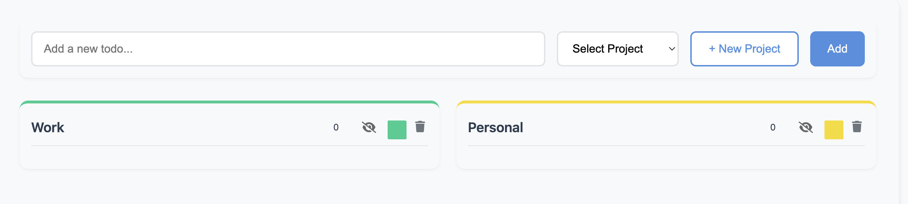
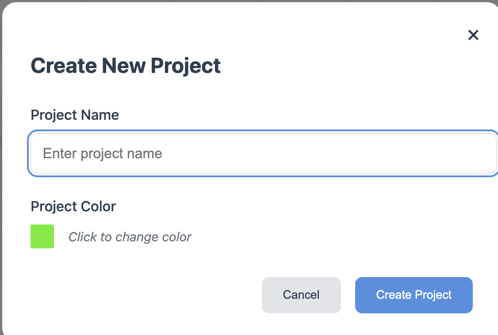
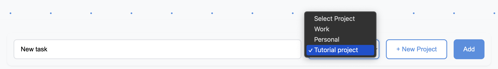

Getting Started
TaskFlow helps you organize your tasks into projects. Let's learn how to use it effectively.

Creating Projects
Click the "+ New Project" button to create a project. Each project has its own column where you can add tasks.

Adding Tasks
Type your task in the input field at the top, select a project from the dropdown, and click "Add" or press Enter.

Managing Tasks
You can drag and drop tasks between projects. Click the checkbox to mark a task as complete. Use the menu to edit or delete tasks.